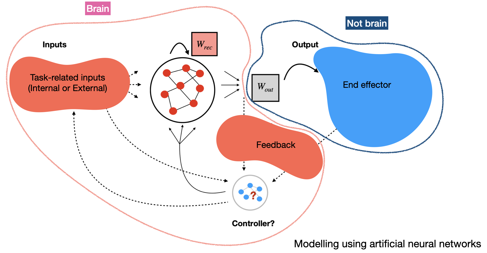
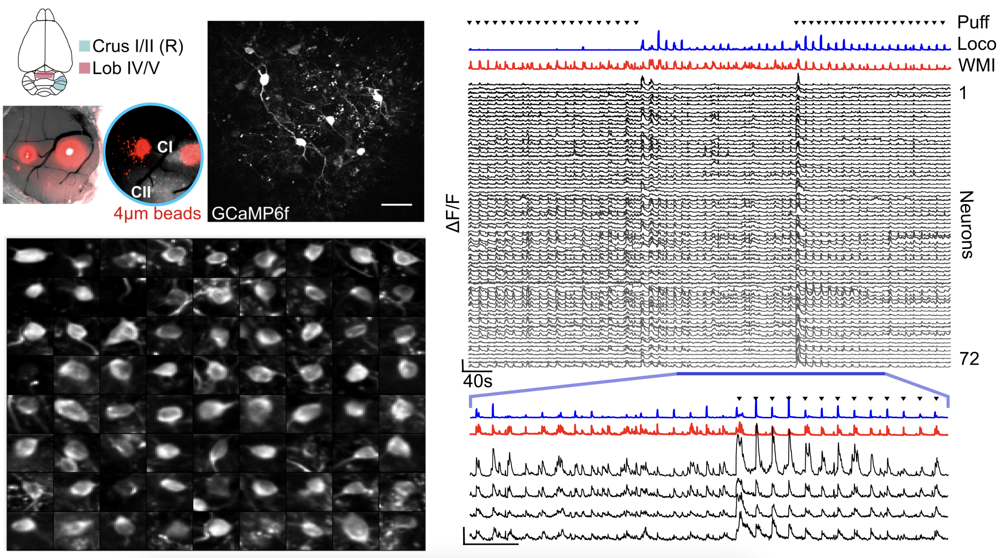
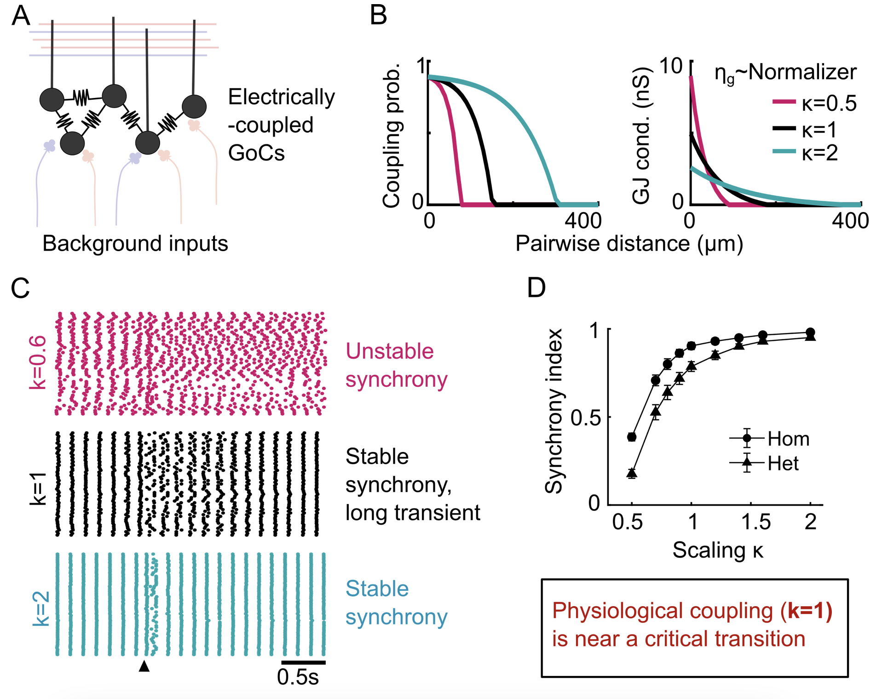
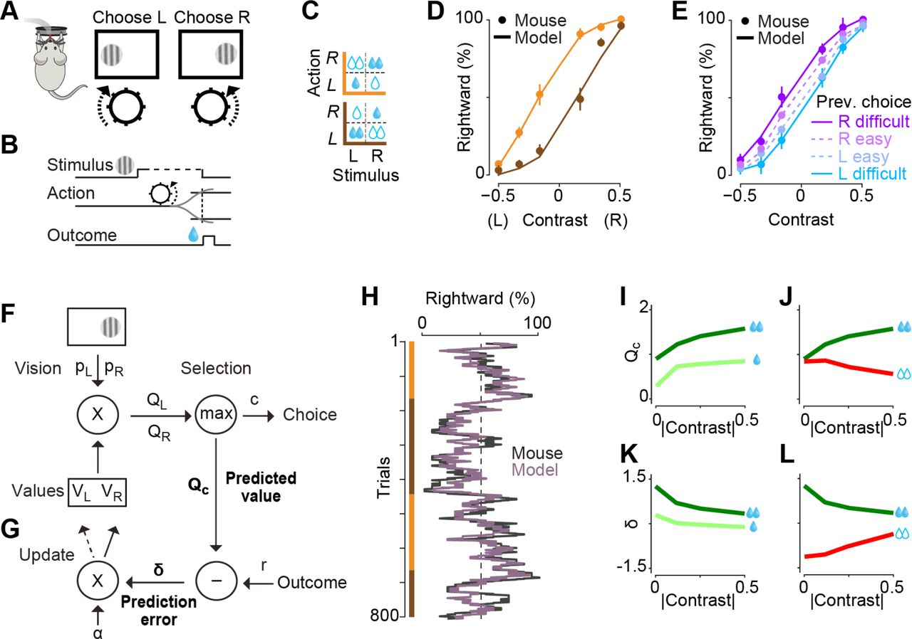

Research_old
List of Projects:
- Feedback control of Cortical Dynamics
- Population dynamics in the cerebellar cortex
- Role of perceptual uncertainty in reward-driven learning
1 Feedback control of Cortical Dynamics
 Artificial neural networks (ANNs), trained to perform tasks analogous to those studied in neuroscience, have become a ubiquitous tool to understand how learning rules determine the emergence of task-related network dynamics (or representations). Reciprocally, existing network structre constrains the learnability of new tasks and the consequent interference (or lack thereof). I use recurrent neural networks (RNNs) to model motor control tasks, including the use of motor BCI (brain-computer interfaces), where feedback about the output - either as “efference copy” and/or sensed state of the effector (limb, cursor, voice) - is a critical component to successful task completion. This feedback is needed to alter network dynamics in real time, in response to noise or external perturbations, to adjust the motor output. Moreover, learning in these networks may involve changes to the feedback inputs rather than to the recurrent network structure itself, especially when the dynamics are expressive enough. Borrowing insights from work on state-feedback controllers and modelling these “controllers” using neural network architectures, I study the implications of such an organization on observed neural activity structure and constraints on adaptation.
2 Population dynamics in the cerebellar cortex
The cerebellum - an important locus for motor learning and sensorimotor coordination - interacts reciprocally with the neocortex via disynaptic pathways. Cortico-pontine inputs enter the first stage of cerebellar processing as mossy fibre (MF) terminals, where expansion recoding at granule cells (GrCs) is suggested to transform these inputs into more learnable and separable representations. However, granule cell activity is critically regulated by a small but powerful inhibitory network of Golgi cells (GoCs), which have been implicated in both homeostatic scaling and regulating GrC activity sparseness, dimensionality and spike timing.
During my PhD, I studied the spatiotemporal structure of GoC network activity, along with its relation to the feedforward mossy fibre inputs, to resolve how a small electrically-coupled network may perform such varied computational roles.
2A Dynamics of electrically-coupled cerebellar inhibitory networks
Two-photon imaging of Golgi cell network activity
 To examine the organisation of inhibitory population dynamics in the cerebellar granule cell layer, I used 3D random-access microscopy to monitor the activity of sparsely distributed Golgi cells. On slow timescales (∼seconds) GoC population activity was dominated by a network-wide modulation, which correlated with the overall level of behavioural engagement in both vermal and hemispheric regions of the cerebellar cortex. On faster timescales (hundreds of milliseconds - seconds), individual Golgi cells had differential timing and modulation around this shared mode, and this heterogeneity allowed decoding of more specific information on whisking kinematics and locomotion. This multidimensional GoC population activity, with both widespread and distributed components, is well-suited for modulating the threshold and gain of downstream cerebellar granule cells and introducing spatiotemporal patterning.
What determines the degrees of freedom of these networks?
Previously, the role of electrical coupling between GoCs, and the feedback loop between local GoCs and granule cells has been used to study the emergence of coherent oscillations in the granule cell layer (GCL). A critical distinction is that these studies were looking at spiketime synchrony, and mostly within a regime with rhythmic GCL activity. Yet the presence of strong feedforward inputs may transiently desynchronise the network, and coherent GCL oscillations may not exist during active behavioural states. Using a constrained biophysically-detailed model of the circuit, I further showed how multidimensional activity on the ~100s of milliseconds timescale can be observed under input statistics observed in awake and active animals. However, electrical coupling is essential to quench the population variability and amplify a network-wide mode that varies with net input drive.
Dynamical regime changes with electrical connectivity topology
 GoC network models have been shown to exhibit transient desynchronization in response to brief external perturbations, before recovering back to the synchronous spiking state. What governs the return to the synchronous state i.e. is the synchronous state stable? We observed that network topology plays an additional role in determining the stability of synchronous spiking, in addition to shaping the slow dynamics outlined before. Moreover, experimentally-measured connectivity scale is close to a critical transition, resulting in long transients but ultimately stable synchrony. This allows us to posit new normative theories about the potential computational benefits of this dynamical regime. Given that electrical coupling is observed across many (inhibitory) networks across the brain and evolutionary tree, electrical connectivity strength and network topology act as powerful tunable properties for controlling the dynamical regimes across different networks.
2B Sensorimotor transformation across the cerebellar circuit
 and local inhibitory neurons (GoCs) within cerebellar cortex")
To further understand the role of structured inhibition in cerebellar computation, I used 3D random-access microscopy to monitor the activity of mossy fibre (MF) inputs simultaneously with GoCs in multiple paradigms - spontaneous behaviors, passive auditory stimuli, and throughout the acquisition of an auditory Go/No-Go task. We focus on three main hypotheses (a) the link between a slow global modulation of GoCs and the net MF drive, which may adaptively adjust the gain and threshold of granule cells; (b) the emergence of lower-dimensional representations in MFs over learning; (c) selective amplification of specific task-relevant modes in distributed GoC activity, that can whiten inputs and aid decorrelated granule cell representations. By examining the plasticity of MF representations as well as how the relationship between inputs and GoC network activity changes during active behaviors, we test several theoretical predictions and provide a conceptual framework for the role of inhibition in shaping cerebellar cortical representations. Indeed, this adds to the growing consensus that even the primary stage of cerebellar processing shows task-specific adaptation and efficient representations, rather than a uniformly high-dimensional code.
3 Role of perceptual uncertainty in reward-driven learning
 In a standard reinforcement-learning setting, expected returns are compared against true returns to modulate our learnt values and action policy. The “expected returns” or predictions are based on knowledge - or more accurately, our inference - of our current state, and the actions we have recently taken (“Q-value tables”). However, uncertainty about our state should be reflected as uncertainty of reward prediction error, and thus the amount of learning at that time. This state uncertainty often stems from perceptual uncertainty i.e. noisy or incomplete sensory information that we use for state inference. Lak et al studied learning of a perceptual decision making task in mice, where mice had to choose appropriate motor actions based on noisy visual cues in order to get water rewards. We modelled the improvement in task performance as a reinforcement-learning process, where we modelled value as a combination of sensory confidence and reward. Fitting these models to the behavioural data offered a parsimonious explanation of the animals’ sequence of choices and patterns of errors.
(Figure from Lak et al, Neuron 2020: Behavioral and computational signatures of decisions guided by reward value and sensory confidence)